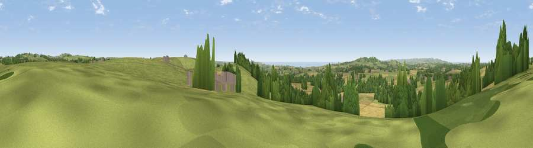

Viewpoint near Nancegollan
#8653 in England · top 20% of its area beats it · near NancegollanWhere it is
The exact computed spot (SW 65162 31688). Click the marker for map links.
The view, rendered

A 360° render of this exact spot computed from the terrain model, tree cover and land cover — summer colours, afternoon light, calibrated against photographs of famous viewpoints. Real trees, hedges and buildings will differ in detail.
The panorama
Grey silhouette: terrain skyline in each direction (720 bearings, Earth curvature and refraction included). Dashed green: skyline with trees (+15 m) and buildings (+8 m) as obstacles. Blue strip: how far the ground is visible on each bearing.
Where the view opens
Wedge length = distance to the farthest visible ground on that bearing (vegetation-aware). Rings at 10, 25 and 50 km.
What fills the view
48% grassland · 32% cropland · 17% woodland · 2% water · 2% built-up
Angular shares of the visible panorama (visual magnitude), not map area. Landscape diversity 0.51 (0–1 Shannon).
Key numbers
More beautiful places nearby
The staircase of upgrades: each row has a higher view potential than everything closer. Driving times are estimates from straight-line distance, calibrated against real road routing — check an actual route before setting out.
| Place | Direction | Drive | Score |
|---|---|---|---|
| Viewpoint near Wendron | SE · 1 km | ~4 min | 68.8 |
| Viewpoint near Ashton | WSW · 5 km | ~12 min | 81.3 |
| Tregonning Hill | WSW · 5 km | ~12 min | 83.0 |
| Rosewall Hill | WNW · 18 km | ~31 min | 88.0 |
| Viewpoint near Combe Martin | NE · 150 km | ~173 min | 88.9 |
| Holdstone Hill | NE · 151 km | ~174 min | 90.2 |
| The Knoll | ENE · 196 km | ~215 min | 91.0 |
50.13866, -5.28781 · source: screening · position refined by local search. Computed location — check access rights before visiting.